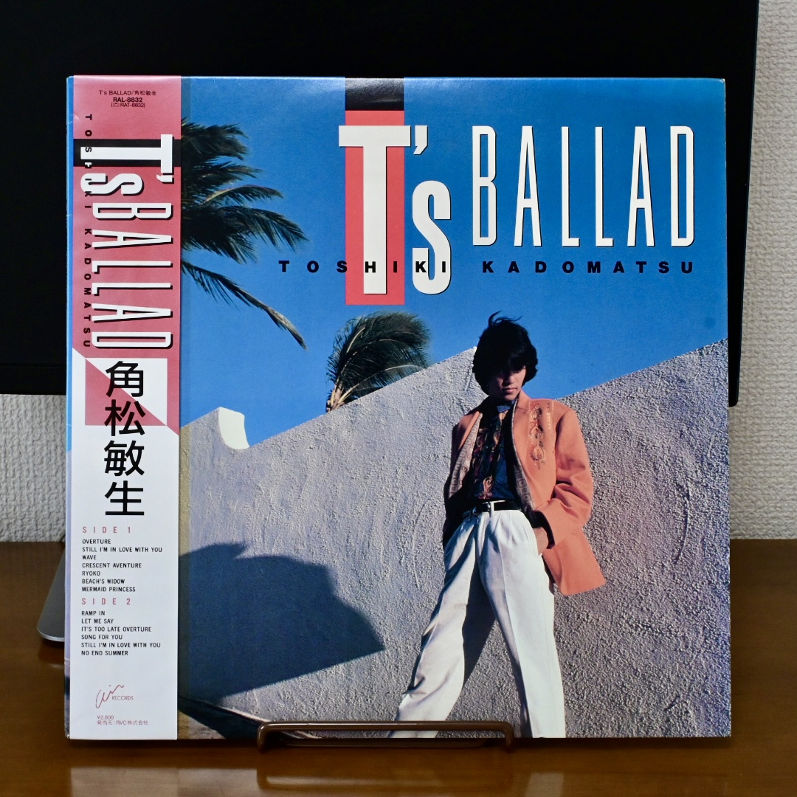
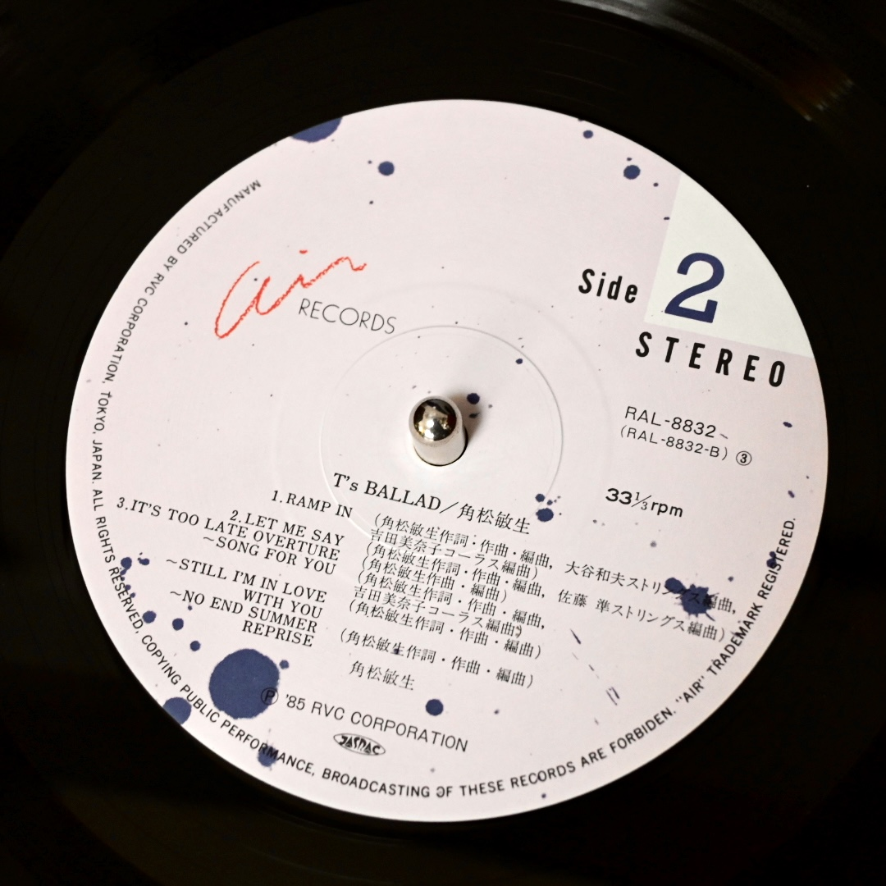

この記事は Your Favorite Music in 2022 Advent Calendar 2022 の 12 月 21 日分になります。2022 年の私を彩った 5 曲を迷いに迷って、なんとか選びました。
それでは 1 曲ずつ見ていきましょう。

角松敏生 - Toshiki Kadomatsu SONG FOR YOU - YouTube
私が今年一番聴いたアルバムから 1 曲選びました。
このアルバムは曲間が波の音やインタールードで繋がれているので、ミックステープを聴いているような印象を受けます。 また、バラードのみが収録されているため、1 日の中のどのタイミングで流してもぴったり合うような気がして、何回も繰り返し聴いていました。
吉田美奈子さんのコーラス、ポンタさんのドラム、Richard Tee のピアノ、、、私の好きなミュージシャンが揃っていて、もう最高の一枚でした。
韓国の CITY POP です。
いかにも 80 年代の日本の CITY POP に影響を受けた感じのメロディーやアレンジです。 耳馴染みがあって聴きやすいのに、ハングルなので何を唄っているのか全く聞き取れません。 それがエキゾチックな雰囲気をより引き立てていて、クセになってしまいました。
今年の前半はエレベーターミュージックにハマっていました。 その中でも特に聴き込んだ 1 曲を選択。
晴れた日の午前中の在宅勤務の BGM としてよく聴いていました。 そういえば、アニメ "日常" の中でこの曲をモチーフにしたサントラが流れていたような気がします。
あの Diana Ross が昨年に続き今年も新曲を出しているということが、とても嬉しい。
今年 (2022年) は全米ツアーをやっていたようですね。一度でいいから生で彼女のパフォーマンスを観たいなあ。
5 曲目はマッシュアップを選びました。
最初からこういう曲だったんじゃないかというくらい、しっくりハマっていて、いつまででも聴き続けていられる心地よさがあります。 こういうマッシュアップを作れる DJ はカッコいいなあ。